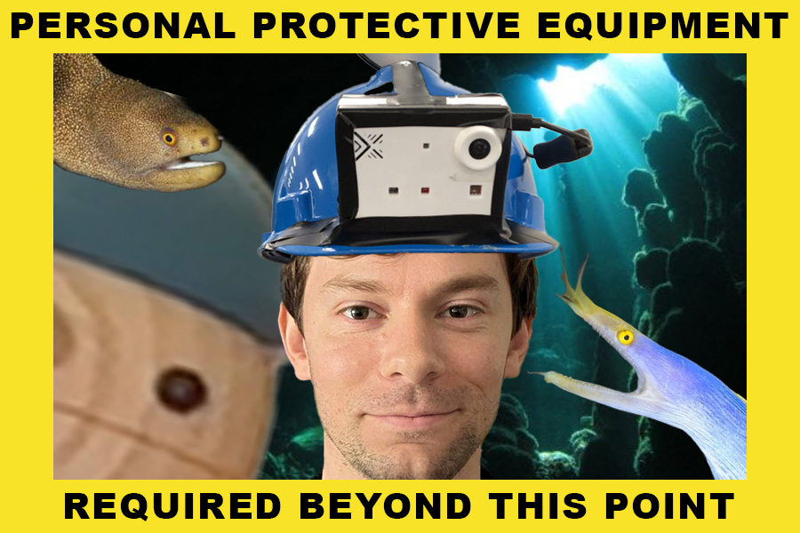
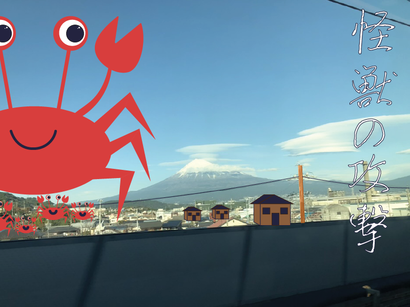

Raster Final

For the Photoshop final project I took a variety of photos both taken by myself as well d on the internet and composed them through layering and masking techniques. This piece came from an irreverent place where I wasn't sure what to make of the project description. I had recently watched a video on nuclear sites, so I imagined what would happen if there was a nuclear accident causing crabs to beoame giant and they attacked!
Vector Final

In the Illustrator final project I used Mount Fuji via Shinkansen. I used a variety of simple shapes joined together into groups to create the crabs, houses, and telephone lines. I used the text tool to add some text with a heavy stroke.
Adobe Animate Final

For the Adobe Animate final I built a short motion piece using timelines, tweening, and layer organization to keep backgrounds, characters, and effects separate—then exported as a GIF for easy viewing on this page.
InDesign Final
Final layout assembled in Adobe InDesign (margins, type styles, spreads, linked assets).
Favorite Links
Sites
Video
Favorite places on the web: Canvas and the CCSF website, plus a YouTube clip in the Video section above.